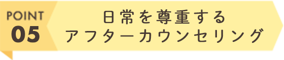
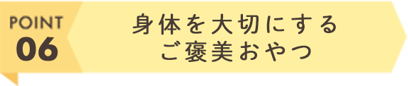

ペット解剖学を基礎から学んだセラピストが担当。経絡やリンパ、骨、筋肉を把握して優しい適切なタッチでマッサージさせて頂きます。
スパセラピスト国際ライセンスを持つセラピストとして、10年以上お客様のお身体とお悩みに日々向き合ってきました。わんちゃんの変化を敏感に感じることに自信があります。

わんちゃんと飼い主さんの日常や現在の身体の状態を手で把握しながら、毎回同じではなくその時々に必要な施術をします。マッサージ中の短時間でも変化に気づき、表情や鳴き声にまで気を配ります。
色んな性格のわんちゃんに合わせて、まずはそっとご挨拶から。ちょっと人見知りなわんちゃんでも、元気なわんちゃんでも様子を見ながらご挨拶させて頂きます。

アフターカウンセリングでは「お仕事で忙しい」「わんちゃんの散歩でしか時間がとれない」といった日常を尊重したアドバイスをお伝えします。

マッサージ終了後に水分補給も兼ねたおやつをご提供。身体に良いものをしっかり循環させ、より免疫力を向上させたり、身体が柔軟かつ心地良くなるようなサポートをさせて頂きます。